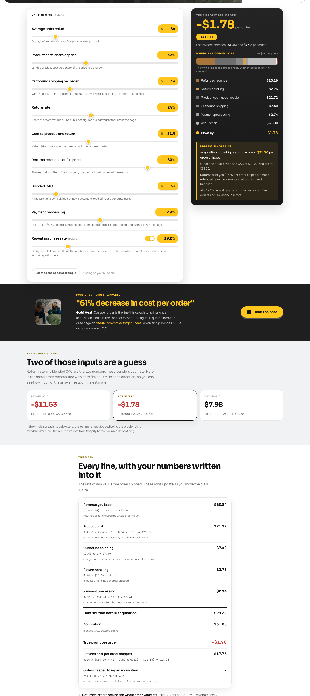
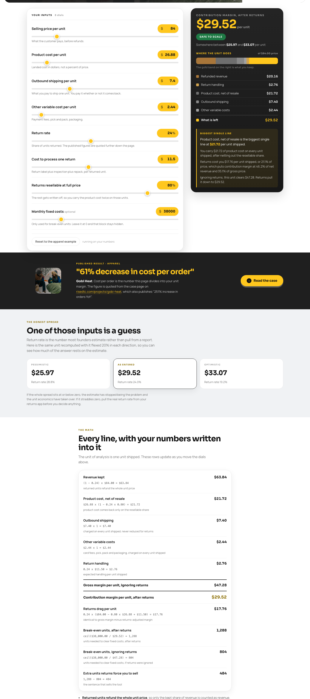
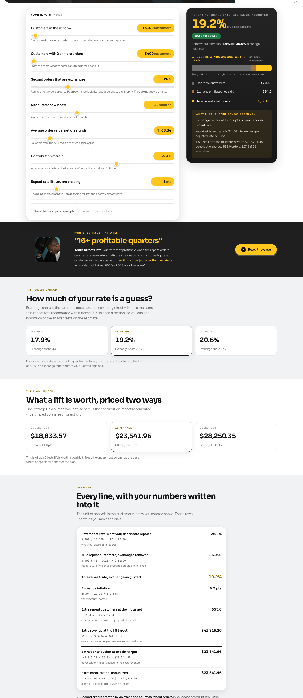

Pack 07 of 09 · Tutorial · free, runs in ChatGPT
Go from returns feeling bad to a ranked, dollar-sized fix list in one sitting.
Runs in ChatGPT Time 20 minutes New data needed A returns export Steps Nine
Tools / The pack, ChatGPT edition / Run a returns audit in 20 minutes
The walkthrough
You pull your numbers out of Shopify, run three calculators on them, and paste the result blocks into one ChatGPT chat.
Your returns feel expensive and you have never put a number on them. The refund total sits in one report, the shipping you already paid sits in another, the product that came back damaged sits in a spreadsheet nobody opens, and the reason tags sit in your returns app where the top tag is "sizing / fit" and swallows most of the volume. You have twenty minutes and eight numbers you can look up today. This walkthrough turns those eight numbers into a ranked list of what returns cost you per order and per year, sorted by dollars, with each leak labelled as a copy fix, a product fix or a policy fix.
Every screenshot below is a real run on Northbay Supply, a sample store. Northbay is a synthetic apparel brand built for this walkthrough and labelled a sample store everywhere it appears. With your own eight numbers, the twenty minutes below end on your own ranked leak list.
Open your Shopify analytics for the last 90 days and write these down. Nothing here needs an export.
Northbay: $84.00, 32%, $7.40, 24%, $11.50, 80%, $31.00, 2.9%.
About 3 minutesEnter all eight into True Profit Per Order, then switch on the repeat purchase dial and enter your repeat rate.

Northbay comes back at minus $1.78 per order, verdict tier FIX FIRST, and the line that matters sits underneath it: returns cost $17.76 per order shipped. That is $17.76 of refunded revenue, unrecovered product cost and handling, charged against every order the store ships, including the ones nobody sends back. Write down both figures.
If you want to know what other stores publish on return rates, the published figures block further down that page cites its sources. Nothing in this walkthrough uses them. Your own arithmetic is the only comparator here.
Open the calculator About 2 minutesSame 90 days, four more numbers, all of them in dollars this time:
Northbay: $84.00, $26.88, $7.40, $2.44, $38,000.
About 2 minutesEnter those into Contribution Margin, with the same return rate, return cost and resellable share from step 1.

Northbay keeps $29.52 per unit after returns, against $47.28 if returns did not exist. The page then prints the sentence that settles it: Northbay has to sell 1,288 units a month to cover fixed cost, against 804 if nothing came back. Returns force 484 extra units a month.
Open the calculator About 2 minutesFrom your customer report and your returns app, over the trailing 12 months:
Northbay: 13,100 customers, 3,400 repeat, 26% of the repeat orders are exchanges.
About 2 minutesEnter those into Repeat Purchase Rate along with your net average order value and contribution margin.

Northbay's dashboard reports 26.0%. Once the size swaps come out, the true repeat rate is 19.2%, so 6.7 points of what looked like retention were exchanges. Size swaps get counted as second orders, which is why the dashboard number reads high.
Open the calculator About 2 minutesExport your returns CSV for a closed window, a cohort where the return window has already shut, and count the tags. Write down row counts. Half-remembered percentages will not reconcile against anything.
Northbay's export: 120 returns from 500 orders. Sizing / fit 73 rows, changed mind 16 rows, quality or defect 11 rows, colour not as pictured 9, wrong item sent 6, arrived late 5.
About 3 minutesCopy the arithmetic card off each of the three calculator pages, the block headed "Every line, with your numbers written into it", and paste them under the headers below. Then paste this whole thing into ChatGPT. If your returns export is a CSV, you can attach the file in the same message and let the tag counts under BLOCK 4 be read off it.
The returns audit prompt
One prompt, one chat. Every rule in it limits what the answer is allowed to call a leak.
I run a US apparel store on Shopify. [ORDERS] orders a month, [ORDERS x 12] a year, average order value $[AOV]. Below are three result blocks I copied off the RISE DTC calculators, plus my top three tagged return reasons. Work only from the numbers below. Rules I need you to hold to: - Never introduce a number I did not give you. Every figure in your answer must be one of mine or arithmetic on mine, with the arithmetic shown. - Never quote an industry benchmark, a typical rate, or what other stores do. - Never predict what a fix would deliver. If I ask what something is worth, compute it from a number I supplied and label it as arithmetic on my input, not a forecast. - If something you need is missing, name the exact report or calculator to go and pull. Do not fill the gap. - If you split one of my totals across categories using a share, say in one line that you are allocating by share of return rows and that this treats every return as costing the same, then carry on. - Plain text. No em dashes. BLOCK 1: TRUE PROFIT PER ORDER [paste the headline, the verdict tier, the range line and the whole arithmetic card from resources.risedtc.com/tools/true-profit-per-order/] BLOCK 2: CONTRIBUTION MARGIN [paste the same from resources.risedtc.com/tools/contribution-margin/] BLOCK 3: REPEAT PURCHASE RATE, EXCHANGE-ADJUSTED [paste the same from resources.risedtc.com/tools/repeat-purchase-rate/] BLOCK 4: MY RETURN REASON TAGS Export of [N] returns from a closed cohort of [M] orders. [tag]: [rows] rows, [share]% [tag]: [rows] rows, [share]% [tag]: [rows] rows, [share]% Remaining tags: [list them with row counts] Give me back, in this order: 1. A ranked leak table. Columns: leak, dollars per order, dollars per year at [ORDERS x 12] orders, which block the figure came from. Rank by dollars per year. 2. For each leak, whether the fix is copy, product or policy, and one sentence saying why on my numbers. 3. The one thing to do before Friday, in one sentence, naming the dollar figure it is aimed at. A leak is money I could recover, not a whole cost line. If you rank a cost line, rank the gap between it and the break-even level printed in the blocks, not the full cost. Under 450 words.
You now have one page you can hand to anyone: a ranked list of returns leaks in dollars per order and dollars per year, each one labelled copy, product or policy, and one action for this week with the dollar figure it is aimed at.
Two jobs sit outside this walkthrough on purpose: the annual returns leak as one audited figure, and a sequenced plan for closing it. Both belong to rise-return-rate-rescue, the returns skill in the RISE Claude kit. It takes eight aggregate Shopify numbers, sizes the leak for the year, and returns a three-move plan against it. You already have every number it asks for, because you pulled them in steps 1, 3 and 5.
Get the kit: the RISE DTC AI kit. Run rise-return-rate-rescue first, then rise-pdp-doctor on the three styles your tag export puts at the top.
You supply every number in this audit, and every figure in the answer is one of yours or arithmetic on yours, with the arithmetic printed beside it. No benchmark appears on this page and nothing in the output is a forecast.
This is the ChatGPT edition of this pack item. The Claude edition carries the same math and the captured sample run on its own page.
Proof it runs
The sample below is the Claude run captured for the original pack page, printed whole so you can read the shape of the result before you spend twenty minutes on it. A ChatGPT capture is not printed here yet. The store below is synthetic, built so the arithmetic is checkable by anyone.
Northbay Supply is a sample store. Every figure below is synthetic and none of it belongs to a client.
What came back on the sample store (verbatim, trimmed for length):
1. Ranked leak table
Allocating the $17.76 return drag (Blocks 1 and 2) by share of return rows; this treats every return as costing the same.
| Leak | $/order | $/year at 17,400 | Source |
|---|---|---|---|
| Sizing/fit return drag | $10.80 | $187,920 | Block 4: 0.608 x $17.76 (Block 1) |
| Changed mind return drag | $2.36 | $41,064 | Block 4: 0.133 x $17.76 (Block 1) |
| CAC over break-even | $1.78 | $30,972 | Block 1: $31.00 - $29.22 |
| Quality/defect return drag | $1.63 | $28,362 | Block 4: 0.092 x $17.76 (Block 1) |
Arithmetic:
0.608 x $17.76 = $10.80; x 17,400 = $187,920
0.133 x $17.76 = $2.36; x 17,400 = $41,064
$31.00 - $29.22 = $1.78; x 17,400 = $30,972
0.092 x $17.76 = $1.63; x 17,400 = $28,362
2. Fix type and reason [trimmed to two of four]
Sizing/fit | Copy + Product. 73 of 120 return rows point to a fit expectation gap, making this the source of $10.80 of the $17.76 return drag; a richer size guide and on-page measurement table close the expectation gap before the product itself needs to change.
CAC over break-even | Copy. Your blended $31.00 CAC sits $1.78 above the $29.22 break-even printed in Block 1; ad creative and channel mix are the levers, and closing this gap turns every order from a loss to flat before any repeat purchase counts.
3. One thing before Friday
Rewrite the size guide and add a body-measurement table to product pages, aimed at the $187,920 annual sizing/fit return drag, which is 4.6x the next-largest leak ($187,920 / $41,064 = 4.6).
Every figure in that answer is one of the three calculators' outputs or arithmetic on them, printed next to the arithmetic. The allocation line at the top is doing real work: return rows get split by tag share, which treats every return as costing the same $17.76. It is the honest way to split a total you have not measured per reason, and the answer states it up front.
Where every figure in the answer comes from:
| Figure in the answer | Source |
|---|---|
| $17.76 return drag | true-profit-per-order.returns_drag_per_order = 17.759040, on screen as "Returns cost per order shipped: $17.76" in assets/01-true-profit-per-order.png, and again as "Returns drag per unit: $17.76" in assets/02-contribution-margin.png |
| 0.608 / 0.133 / 0.092 | Return tag shares supplied in Block 4: 73, 16 and 11 rows of 120 |
| $10.80 and $187,920 | Arithmetic, printed in the answer: 0.608 x $17.76, then x 17,400 orders |
| $2.36 and $41,064 | Arithmetic: 0.133 x $17.76, then x 17,400 |
| $1.63 and $28,362 | Arithmetic: 0.092 x $17.76, then x 17,400 |
| $31.00 | Blended CAC, an input, on screen in the Acquisition legend row of assets/01 |
| $29.22 | true-profit-per-order.contribution_before_cac = 29.224960, on screen as "Contribution before acquisition: $29.22" |
| $1.78 and $30,972 | $31.00 - $29.22, the same magnitude as true_profit_per_order = -1.775040; annualised x 17,400 |
| 17,400 orders | Operator input in the prompt, 1,450 orders a month x 12 |
| 4.6x | Arithmetic: $187,920 / $41,064 |
Northbay Supply is a sample store built for this walkthrough. Every screenshot on this page is a live run of the calculator linked above it, and every number in the text is the number on the screenshot.

From week one we run this audit on live Shopify and returns data, then work the biggest leak on the list until the dollars per order move. Book a 30 minute intro call and we will walk your returns together.
Book an intro callMattan Danino CEO, RISE DTC Direct with the team. No pitch deck.